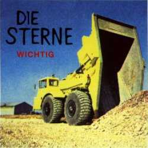

Mach die Tür zu, es zieht / Es ist sowieso schon kalt / Komm mit, wenn du mitmußt / Du wirst hier nicht alt / Nicht da wo du hinwillst / Und nicht auf dem Weg / Und hast du nicht gelesen was / Drübersteht / Der Wagen wirbelt Scheiße / In die schmutzige Gegend / Einer glotzt blöd aus dem Fenster / Und ein Anderer sitzt daneben / Zuhause hat der Regen eine Welt zerbombt / Und dem dämmert grad / Daß sowas auch woanders vorkommt / Nach jedem Ausflug diese Heiserkeit / Es wird ständig teurer / Ist schon wieder soweit / Nur Weg zwei vor und zwei zurück / Reißt die Klappe auf und / Bewegt sich kein Stück / Mach die Tür zu, es zieht / Es rollt und rollt und rollt / Und hört nicht auf / Die Geschichte ist erzählt / Es hört trotzdem nicht auf / Zwischen nichts und nichts und wieder nichts / Kalten Gedanken und Getränkeblitz / Greifst du dir zwischen die Beine / Suchst nach Kraft und findest keine / Dein Wunsch heißt Wärme und meldet sich / Und legt sich wieder hin / Weil, hier gibt es nichts / Mach die Tür zu, es zieht
Das Telefon klingelt die ganze Zeit / Es ist alles aneinandergereiht / Ich lasse es geschehen, es klingelt so schön / Wenn die Verpflichtung ruft (sag ihr:) ich bin so weit / Du bist zuhaus und deine Stimme klingelt bei mir / Ich bin ganz Ohr und halb Orgasmus / Obwohl ich weiß, daß ich gleich / Woanders hinmuß / Die Vögel ziehen fort / Ach - die kommen wieder / Bis dahin bin ich immer noch / Oder wieder / Hier / Meine Bekannten haben seit einem Jahr diesselben Lieder / Stellen sich vor - oder kommen wieder / Ich sitze dabei, meine Fahne hängt im Wind / Es steht irgendwas drauf, was gerade jeder kennt / Ich denke ich bin gegen die Gegenwart / Ich muß zurück in die Schule / Zurück zum Staat / Wo die, die Ordnung rufen, Recht kriegen / Weil alle und ich Schweine sind / Und ziemlich durchtrieben / Alles was läuft, geht auch irgendwie weiter / Und fragt sich nicht wozu - Wer schreit da? - / Tut mir leid ich hatte gerade deine Stimme nicht erkannt / Ich ruf dich wieder an / Vielen Dank
Eine Form die nicht zusammenhalten will / Charakterlosigkeit in den Augen des Herrn / Das ist ein junger Mann mit Hammer in der Hand / Von manchen Leuten Bildhauer genannt / Und Krach, kommt raus / Das innerste zuerst / Das wesentliche freigelegt / Mit sicherem Blick und sicherem Tritt / Ich trete dir und du mir / In die Eier / Etwas geformtes mit Anstrengung zu sich geholt / aus dem Paradies in die eigene Nähe / Aufmerksamkeit, feuchte Augen / Grüße von Bambi / Schon kapiert / Und Schweiß / Ich weiß / Es war / Nicht leicht / Dies hier hat ein Recht auf Wirklichkeit / Baustoffhandel, 1. Stock / Ich trete dir und du mir / Ins Empfindlichste / Aus dem Schlamm an Land gespuckt / Etwas, das erst lässig zuckt, / fängt an zu rutschen will zurück / Aus der Nähe in die eigene Haut / Baustoffhandel, 1. Stock / Ich trete dir und du mir / In die Eier
(Neues Blatt / Schalter umgelegt / Hält an was es anhalten kann / Und aus was es aushält / Experiment im Spielzeuglabor / Mikroskopisch klein - Aber mein / Schlüpft aus dem Ei, fühlt sich feucht / Alles wässrig was Welt heißt / Und nichts so meint wie du / Klammer zu) / (Die Welt macht sich hübsch / Ein hohler Eimer / Ich hab keine Ahnung wessen / Deiner oder meiner / In der Erinnerung klingelt es irgendwo / Und erinnert an was / Steht auf, strengt sich an / Und sinnlos, wie man sieht / Weil man davon nichts sehen kann / Du warst dabei / Ich sag "hau ab" / Und mein "hallo" / Klammer zu) / (Reißt die Sicherung, sicher, / Die Sicherung reißt schon die ganze Zeit / Nie war sie wertvoll / Nie gut, nur besser / Nie beides zugleich / Nie, daß es reicht / Es kommt zu Heiserkeit / Du warst dabei / Ich krächze "ich" / Und mein' "hallo" / Klammer zu)
Ich / Ich bin ein Arschloch / Und eine Armee / Und ich bin ein Arschloch / Und ich bin beides / (Und ich bin ein Star) / Und / Ich / Bin / Wichtig / Ich trinke / Bis ich nicht mehr kann / Und ich weiß / Was ich weiß / Und ich weiß was ich weiß Ichweißwasichweiß / Ich sterbe hinterm Steuer / Ich als Schlange / Krieche durch die Gärten / Unter dein Kissen / Und in deinen Kopf / (Und ich fresse dich auf) / Und / Ich / Bin /
Ich war gerade sehr beschäftigt / Zu vergessen was ich sagen sollte / Wozu ich überhaupt was sagen wollte / Selbstgespräche hielten die Hand in Bewegung / Die Musik war doof und außerdem zu laut / Jetzt ist sie aus / Ich hab den Anfang vom Film verpaßt / Und finde keinen der / Mir erklärt was / In der Zwischenzeit passiert ist / Zwischen zwei Gesprächen / Den Weisheitszahn entfernen lassen / Über gute Bekannte stolpern / Um in ein warmes Bett zu fallen / Dann unbemerkt verschwinden / Und was ist so interessant / An der Stelle wo / Eben noch was war / Ich hab den Anfang vom Film verpaßt / Und finde keinen der / Mir erklärt was / In der Zwischenzeit passiert ist / Tausend Jahre später ist immer noch nichts klar / Nur das es langsam scheißegal ist / Was am Anfang war
Geräusche / Die Teppiche legen / Stimmen sickern durch und werden wieder Wesen / Gott, jetzt hör ich schon Stimmen, eben / War ich noch wach und war noch wer / Wußte, wenn hier einer redet, wer das wär / Ich / Jetzt kommen sie näher und stellen Fragen / Wo willst du hin, was soll ich dazu sagen / Ich weiß nicht wo ich bin / Rock / Der saß und das / In meiner Wohnung / Massive Wiederholung und die Betonung / Auf den Refrain / Komische Slogans wie: Kommt zusammen, / Fickt das System / Meine Verfassung verschlechtert sich / Ich leg mich irgendwo ab wo mich keiner kriegt / Und stell mir vor, daß es das / Alles nicht gibt / Diesen doofen / Rock / Das hat mich jetzt verwirrt und was verwirrt berührt / Quatsch / Das hat mich jetzt verwirrt und was verwirrt bewirkt / Daß man sich orientiert / Oder wie auch immer / Wie soll man das jetzt nennen / Reißt mich raus, stößt mich rein, / Doch ich würde lieber pennen / Statt als Soundtrack zur Neurose / Die der anderen anzuhören / Nur die meisten, die sich melden, wollen gar nicht stören / Was auch ziemlich blöd ist - Wird gerade gern gehört / Und Geschäft bleibt Geschäft, ob du's tust oder läßt / Irgendwie braucht niemand dazu irgendwas zu sagen / Sondern nur noch die Gitarre auf spezielle Weise anzuschlagen
Alles außen, Freunde, Feinde / Alle außen, alles Schweine / Ich, Ich und mein kleiner Trick / Es ist außen wo ich nicht bin / Wo ich bin ist außen nicht / Und innen nur / Wo ich nicht kann / Teen-Powe / Mit hundert vor die Mauer / Und Tschüß / Alles oder Niemand / Selbst Schuld, wo ist oben / Selbst Schuld, wo der Boden / Was soll jetzt diese Diskussion / Du kriegst die großen Stücke / Auch nur mit Mühe klein / Und wenn du endlich soweit bist / Holt dich die Entwicklung ein / Ist viel, schon zuviel ist viel, viel / Alles oder Niemand
Rausgepresst Indiewelt / Wenn der Galle spuckt, der sich da Am Leben hält / Äusserlich bewegt an Ästen sägt / Das ist ein mieser Charakter, der hier erzählt / Von der Hölle so wie er das sieht / Und ist ein Moralist und der redet Mist / Das ist nicht meine Strasse / Meine Sprache / Mein Heim / Im Formulierungswahn / Wo sollte es sein / Ich bin hin und weg / Selber im Dreck / Genug davon, Video an / Läuft sowieso immer / Wer ist dran / Vorweihnachtszeit, Vorweinmahlzeit, / Morgenstunde, abends breit / Das bringt Ordnung ins Leben / Wie das Leben zu zweit / Das Leben zu zweit in der Massenhaftigkeit / Ich bin weg und hin / Sowieso drin / Wenn es etwas zu sehen gibt / Gibt es etwas zu zeigen / Wenn einer zeigt heißt das / Daß er etwas sieht
(instrumental)
Heiß, heiß, kochend heiß, / heiß, heiß, hundert Grad, / heiß, heiß, glühend heiß, / heiß, heiß, blühend weiß. / Jenseits von Eden. / Euphrat und Tigris / Allah wollte es - so / Sechshundertsechsundsechzig / schütze uns vor Gestern / Eins neun dreiunddreißig / In 3D und Farbe / Dann ist Sendepause. / Das war der Wilde Westen. / Hält Gott die Zehn Gebote? / Ich will nicht, / daß du in schwarz gehst / wenn ich tot bin.
Wo warst du im Krieg? / Weißt du, was ich meine? / Ich war auf der Suche, / Du warst auf der Flucht. / Hörst du die Räder rollen? / Irgendwann in der Nacht / Durchsichtig und klar / In Musik gebadet / Jede Blume hat ihren Schatten / Zweitausend Lieder / Zweitausend Tode / Mutter Mutter, warum hast du mich gebor'n / oder hat mich der Esel im Galopp verloren?
Ach ich spring ins Leere. / Halleluja Schwestern / Ich hab den Text vergessen, / ich bin ein Fragezeichen. / Doch ich komm morgen wieder, / gib mir deinen Segen. / Liebe, was ist das? / Das ist das Leben in der Stadt, / was soll daran schlecht sein? / Liebe kommt von unten. / Liebe hat schwache Worte. / Ach ich bin so müde. / Ich geh hier nicht weg, / geh zurück ins Meer, / such mir meinen Engel. / Wer ist hinterm Spiegel?
(instrumental)
In kalten Wintern / Eiserne Mäntel / Vor sich hingeredet / Mantelisoliert / Alles Kitsch im Kopf / Bring es um - bloß wie / Etwas, das gefroren hundertfünfzig Jahre hält / Mal wieder richtig gute Witze reißen / Schnaps ist Schnaps und Kegelbahn bleibt Kegelbahn / Schuster bleibt bei seinem Leisten bis viertel nach Acht / Ziemlich gute Leistung hätt ich nicht geschafft / Der Teil von meinem Gemüt / Der sich introvertiert gibt / Hat noch etwas damit zu tun / Was hattest du / Gestern noch gesagt / Es klang so nach / Einem Attentat / Unten im Bohrloch, bei den Diamanten / Hart unter Druck gesetzt / Bereit jetzt alles zuzugeben / Die Hölle bläßt / Die Nase frei / Solche Behandlung ist jedoch grad ziemlich unwahrscheinlich
(instrumental)
Schon bei der Geburt dem Wahnsinn anvertraut
Und der senkt sich wie eine Nadel in die Haut
Läßt dich milde lächeln, meistens Gruseln
Viel zu viel billige Fusel
Weil Wirklichkeit hier heißt zu funktionieren
Und nach Möglichkeit dabei nicht die Nerven zuverlieren
Wirst Du gejagt und die ganze Nation (ist)
Irgendwie doch im Rösner-Degowski-Syndrom
Es war schon immer teuer jetzt wird's exotisch
(Hier)
Man würde ja lieber Ausländer sein
Als gieriges kleines Inländerschwein
Nur wenn das eine nicht geht, wo fängt das andere an
Wenn das Problem ist, daß man wo man ist
nichts anderes sein kann
Ich meine: milde Lächeln hält nicht lange
Und die Falle hat dich in der Zange
Wer hält noch mit der Entwicklung Schritt
Ich weiß nur eins: Das Eine denkt das Andere mit
(Nation/Gewalt)
Es war schon immer komisch jetzt wird's exotisch
Hier
Das Lied das ich am nötigsten hab,
ist das Lied das ich am wenigsten mag
Diesmal hab ich mir das Problem nicht selber ausgedacht.
Diesen Feind wollte ich nicht.
Und überhaupt, wenn ich sie mir aussuchen könnte,
meine Feinde - dann hätt' ich wenig oder keine.
Doch die hier weigern sich Mensch zu werden -
damit sie können, wie sie wollen, sollen andere sterben.
Ich schwör' sie haben mich oft genug vergast und verbrannt.
In diesem und in jedem anderen Land.
Red' nicht von Angst, die können sie riechen wie Hunde,
stechen ihre Messer in jede offene Wunde.
Paß auf, wo du hingehst, paß auf, was du sagst,
paß auf, wen du draußen nach dem Weg fragst.
Spar' dir deine Kraft, deine Energie.
Laß' dich nicht verrückt machen genau das wollen sie.
Keiner von denen kann die Zeit aufhalten.
Und was - was sind fünftausend Jahre.
Das Lied das ich am nötigsten hab,
ist das Lied das ich am wenigsten mag.
Darum Rückzug - Rückzug vor der Feigheit.
Raus hier